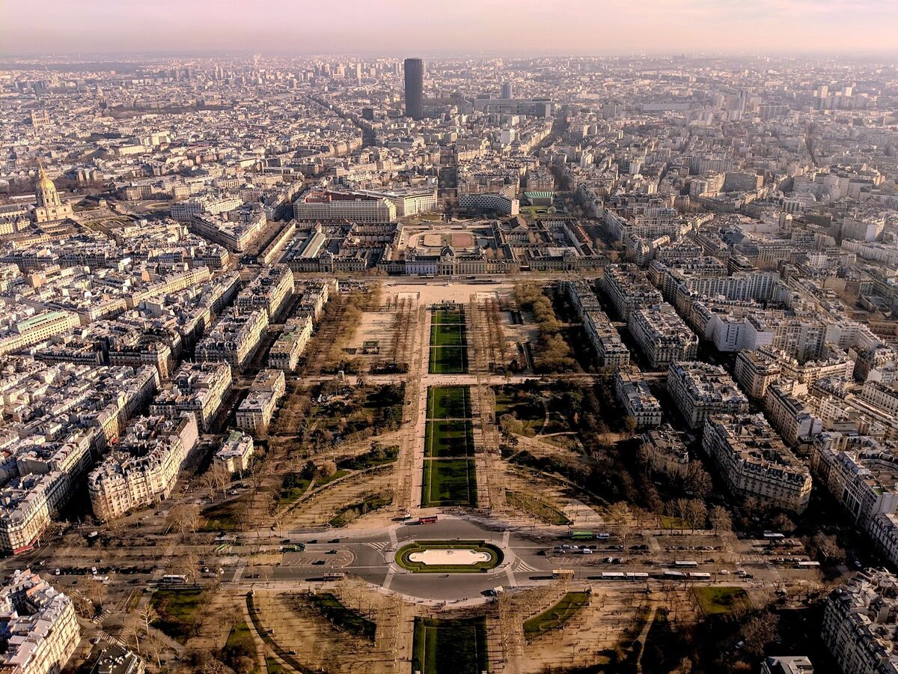
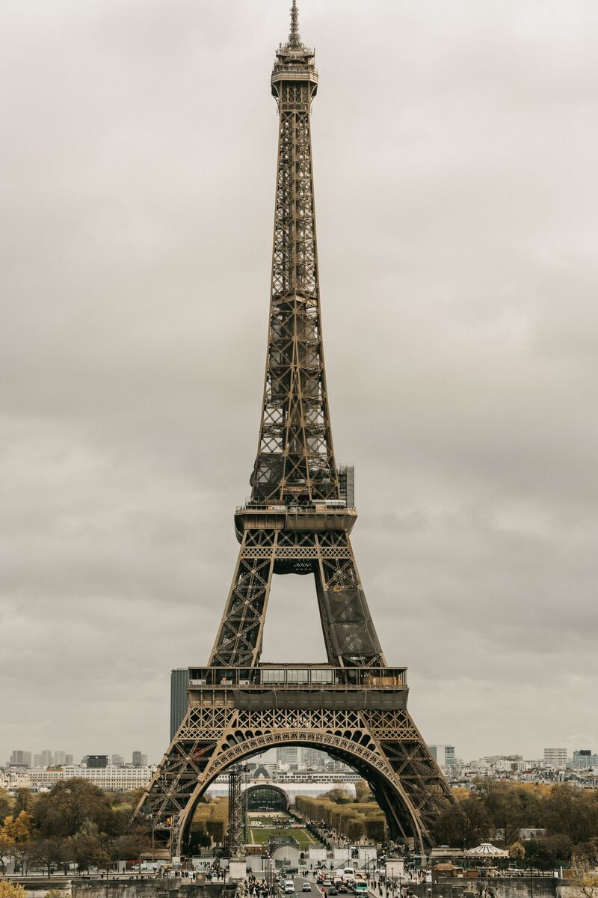

01
FRANCE ARCHIVE
01 / HISTORIC MARVEL
The Iron Tower
"An odious column of bolted sheet iron."
Erected entirely from puddle iron for the 1889 Exposition Universelle, Gustave Eiffel’s structure was initially despised by Paris's cultural elite. It was granted a temporary 20-year permit, escaping demolition only when its massive height proved invaluable as a permanent military radiotelegraph mast.

FR-1902 // SEINE HORIZON
FR-1889 // BASE ASSEMBLE